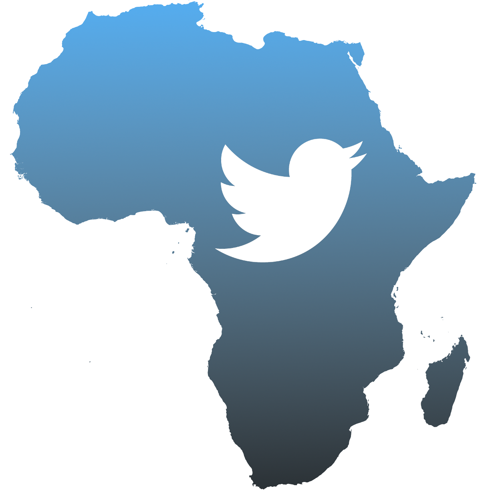

Introduction
In their article, Sheena Magenya discusses why, especially now amidst COVID 19, having a more feminist driven internet is needed. They speak about the importance of uplifting the voices of African women, LGBTQIA, disabled and anyone who has been pushed to the fringes of society and by creating a feminist internet, it can provide a place for people to be able to freely express themselves and engage with each other share content without the worry and fear of the backlash from the current inhabitants of the internet.
Africa and the Global North. .

Africa as a continent is one that is incessantly used and viewed as a lab rat for the Global North. They often seek to diminish the world’s view of the continent to make exploiting them easier. The illegal testing of drugs on people in Nigeria that resulted the deaths of people, the exploitation of African countries for their natural resources and the constant slandering of the entire continent in the media as less developed and overall lacking in many ways compared to the more ‘developed countries.
Africa is never viewed as the innovators of technology, just the beneficiary. Magenya states that to the rest of the world, when someone in Africa creates something that is considered to be an astounding innovation, it is always seen as something that was a product of survival, as a means of battling famine and disease and drought. People from Africa are never believed to be capable of being innovative and to dabble in the creation of new technology because it interests and excites them.
Someone out on Twitter.
Deeper below this sits the “stories of women, queers, and people with disabilities.” (Magenya, 2020).Everyone’s response to the lack of socialising during the pandemic and the quarantine was to use the internet, ignoring the problems and the issues that come from that. With so many people now spending so much more time online now, there are things that can no longer be ignored. On social media especially, it has been made very clear that being a woman, LBGTQIA, disabled or any other marginalised identity makes you a prime target for a certain type of violence specific to the internet, one that is hard to hold people accountable for in the offline world. It is one thing to call someone out on Twitter and hold them accountable for the things that they say and that they do but it is another thing to make sure that should they do something harmful in anyway whether over the internet or if it started on the internet and migrated into the physical, that they can be held accountable and face repercussions.
Magenya states that therefore it is important to highlight these voices and create a feminist internet. It is important to highlight the voices of marginalised communities and especially the further marginalised people within those communities so that they may have a space to participate in the narratives being discussed, so they may share and in some way rewrite harmful and ignorant narratives to better the most vulnerable people in a society.
Bibliography
Magenya, S. (2020) Making a Feminist Internet in Africa: Why the internet needs African Feminists and Feminisms, GenderIT.org. Available at: https://www.genderit.org/editorial/making-feminist-internet-africa-why-internet-needs-african-feminists-and-feminisms (Accessed: 31 May 2021).